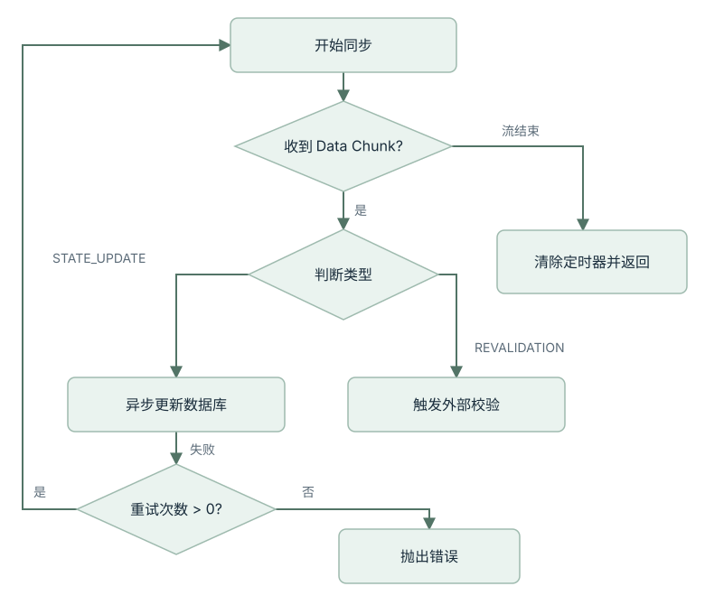

在 AI 编程把产出速度推到前所未有高度之后，很多团队开始碰到一种新的维护成本: 代码能跑，但人并不真正理解它。本文尝试把这种新型债务拆开来看，解释它从哪里来，又该怎样控制。
一、Why：AI 把“写代码”这件事变快了，也把“理解代码”这件事变慢了
在传统开发里，代码通常是开发者心智模型的外部化过程。
你一边思考，一边落笔。变量为什么这样命名，状态为什么这样流转，异常为什么这样兜底，很多逻辑并不是写完之后才理解，而是在书写过程中逐步被确认的。代码写出来的同时，人对代码的心理地图也一起长出来了。
AI 编程把这个顺序反了过来。
现在更常见的过程是：先由模型在几十秒内生成一大段完整实现，再由人回过头去阅读、验证、补洞和维护。代码的生命周期从过去的 思考 -> 编写 -> 运行 -> 维护，变成了 生成 -> 阅读 -> 理解 -> 维护。
这看起来只是顺序变化，实际却改变了整个维护难度的来源。
因为机器生成速度几乎可以近似看成 O(1)，而人类理解复杂逻辑的速度，始终受限于注意力、上下文容量和经验背景，往往更接近 O(n)。一旦生成速度远高于理解速度，团队就很容易进入一种危险状态：代码在数量上不断膨胀，但对代码的真实掌控力并没有同步增长。
这就是“理解力债务”出现的土壤。
二、What：什么叫“理解力债务”？
所谓理解力债务 (Understanding Debt)，并不是指代码一定写得烂，也不是指系统已经不能运行。它更像是一种认知上的透支：
项目中存在大量“运行正确，但开发者无法对其内部逻辑进行稳定心理模拟”的代码。
它和传统技术债并不是一回事。
- 技术债：你知道这里实现得不够好，也知道为什么不好，只是暂时没时间修。
- 理解力债务：你可能觉得这段代码写得挺漂亮，测试也过了，但你其实并不真正拥有它。一旦要改、要扩展、要排障，你会发现自己对它的内部机制只有碎片化印象。
这类债务在纯人类开发时代当然也存在，但增长速度通常是可控的。因为代码大多是团队自己一行一行写出来的，生成速度没有那么离谱，理解速度虽然慢，但至少能跟得上。
AI 把这个比例打破之后，理解力债务开始变成一种结构性问题。
三、How：理解力债务是怎么积累起来的
- 大脑
- 逻辑
- 代码
理解伴随实现过程建立。
- AI
- 代码
- 大脑
先得到实现，再补齐理解。
1. 从“导出”模式切到了“导入”模式
传统编程更像一种 Export（导出）：
大脑 -> 逻辑 -> 代码
AI 编程则更像一种 Import（导入）：
AI -> 代码 -> 大脑
当代码不再主要由你亲手推演出来，而是先作为成品落在你面前时，你和代码之间就天然少了一层“生成过程中的逻辑锚点”。
2. AI 更擅长局部成立，不擅长自动维持全局一致
模型非常擅长把一个局部任务写得像模像样。单看一个函数、一个 Controller、一个 Hook、一个异步处理器，它常常都说得过去。
真正的问题出在系统层级：多个局部模块拼在一起之后，状态转换是否一致，失败路径是否闭合，职责边界是否越界，长期维护是否可控。这些东西并不是看几眼 I/O 就能确认的。
3. 人类会不自觉退化成“黑盒驱动”
当 AI 一次性产出大量代码时，开发者最容易采取的自保方式，就是只验证输入输出是否符合预期，而不再去跟踪内部状态到底如何变化。
短期看，这样做非常高效。长期看，这恰恰是在把理解力债务滚大。因为你验证的是“这次能不能跑”，而不是“以后我还能不能改”。
四、具象工程锚点：一段异步流代码里，债务是怎么长出来的
我们来看一段典型的 JavaScript 异步流处理逻辑。AI 很容易一次性生成类似下面的代码：
async function syncProjectState(projectId, retryCount = 3) {
const stream = getProjectEventStream(projectId);
return new Promise((resolve, reject) => {
let completed = false;
const timeout = setTimeout(() => {
if (!completed) reject(new Error('Sync Timeout'));
}, 10000);
stream.on('data', async (chunk) => {
try {
if (chunk.type === 'STATE_UPDATE' && !chunk.isStale) {
await db.projects.update({ id: projectId }, { $set: chunk.data });
} else if (chunk.requiresRevalidation) {
await triggerExternalRecheck(projectId);
}
} catch (e) {
if (retryCount > 0) {
resolve(syncProjectState(projectId, retryCount - 1));
} else {
reject(e);
}
}
});
stream.on('end', () => {
completed = true;
clearTimeout(timeout);
resolve({ status: 'success' });
});
});
}
乍看之下，这段代码并不离谱。它有超时控制、有事件流、有异常处理、还有递归重试，看上去甚至像一个“考虑得很周到”的实现。
但理解力债务通常就藏在这种代码里，因为它的问题不是语法错误，而是阅读者很难快速建立稳定的状态模型。
例如：
stream.on('data')里的await并不会阻塞下一次事件到达，多个更新之间可能存在隐式竞态。resolve(syncProjectState(...))这种递归重试写法，会让 Promise 链路变得不直观，调试时很难判断到底处在第几层重试。end事件和超时回调之间有没有竞态窗口，阅读时并不能一眼确认。
也就是说，这类代码的危险，不在于它不能运行，而在于它会让维护者在“好像理解了”和“真正能改动它”之间反复摇摆。
五、怎么降低理解力债务：核心不是完全拒绝 AI，而是强制建立同步锚点
理解力债务不可能彻底消失。只要团队在用 AI，它就一定会存在。真正有意义的问题不是“如何消灭它”，而是“如何把它控制在可维护范围内”。
状态、分支与异常路径
边界成为可执行契约
追踪异步状态与调用
关键路径优先理解
1. 先让 AI 解释逻辑，再让它生成代码
不要一上来就让模型“把功能写完”，而应该先要求它输出：
- 核心状态流转
- 关键分支判断
- 异常路径与失败处理
- 哪些部分最可能存在不确定性
这样做的目的不是拖慢效率，而是先为人建立逻辑锚点。
2. 测试先行，把边界变成显式资产
在 AI 时代，测试的一个额外作用，是帮助人类把“我认为这个逻辑应该怎样工作”表达成可执行契约。
如果关键模块在生成代码前就已经有测试样例，那么后续无论模型怎样改写实现，团队至少还掌握着对边界条件的主动解释权。
3. 让状态流转可视化
对于异步逻辑、状态机、补偿流程、事件驱动链路，要求 AI 额外输出 Mermaid 图、调用图或步骤分解，往往比单纯多看几遍代码更有效。
例如，上面那段逻辑如果配一张状态图，人至少能先搞清楚自己在追什么：

4. 把高风险代码分层对待
并不是所有 AI 生成代码都要被完全理解。
一些边缘工具层、接口适配层、稳定的基础组件，可以容忍存在一定程度的“二类理解力债务”。只要接口清晰、行为稳定，它们可以被当成黑盒使用。
但一旦进入以下区域，就必须强制降低生成速度：
- 核心业务规则
- 权限与鉴权链路
- 资金、结算、库存这类高后果系统
- 跨服务事务与补偿逻辑
这些地方的代码，不能只要求“跑通”，还必须要求团队能解释、能推演、能重构。
六、如何度量这类债务
“理解力债务”听起来很抽象，但团队仍然可以用一些近似指标去观察它是否正在恶化：
| 指标名称 | 观察方式 | 警示信号 |
|---|---|---|
| AI 代码占比 (ARC) | AI 生成代码行数 / 总代码行数 |
持续升高但评审机制没同步加强 |
| CR 认知偏差 (CRD) | Review 中发现的隐性逻辑问题数量 | 每 100 行持续偏高 |
| 重构失败率 (RFR) | 修改 AI 代码后引入非预期 Bug 的频率 | 同类模块反复返工 |
| 心智模型同步度 (MMS) | 团队成员能否说清核心逻辑分支 | 关键模块只能“看个大概” |
这些指标不需要追求精确到小数点，它们的意义更像是健康检查：提醒团队，不要把“代码生成得很快”误当成“系统掌控力在提升”。
七、Trade-offs：效率和掌控力，本来就不可能同时拉满
理解力债务之所以难处理，是因为它不是一个纯技术问题，而是一个效率与掌控力之间的动态平衡问题。
如果你要求团队对所有 AI 生成代码都逐行彻底理解，那速度优势会几乎被抵消。
如果你放任团队只看 I/O、不管内部逻辑，那系统迟早会积累出一个没人敢碰的黑盒地带。
所以更现实的做法，是承认三件事：
- 人类理解速度就是比生成速度慢。 这不是态度问题，是生理限制。
- 并非所有代码都值得同等强度的理解。 关键路径和边缘代码必须分层治理。
- 文档、测试、图示、Review 不再只是附属物。 它们开始承担“同步人类心智模型”的作用。
从这个角度看，AI 并没有让维护变简单，它只是把维护成本从“写代码”一部分转移到了“理解代码”。
八、结论
理解力债务是 AI 时代非常典型的一类新型工程债务。
它最危险的地方在于，系统在表面上可能运行正常，团队甚至会因为开发效率显著提升而产生错觉，误以为一切都在变好。真正的风险往往要等到需求变更、线上故障、跨模块重构时才集中爆发。
所以，对今天的高级工程师和 Tech Lead 来说，新的任务已经不只是写出正确代码，而是确保团队对关键代码始终保有解释权和修改权。
这意味着，你要学会主动降低某些环节的生成速度，主动增加同步锚点，主动把“理解”这件事重新设计回工作流里。
因为在 AI 时代，系统真正稀缺的，未必是代码产能，而是人类对系统的持续掌控力。